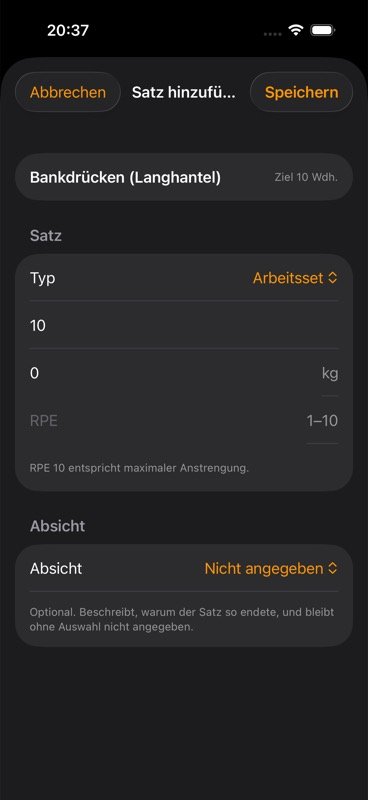

IRONLOG / UX-AUDIT · IOS
Auch auf iOS im Training bleiben
Die Fachlogik bleibt gleich, die Oberfläche fühlt sich nach iOS an: Safe Area, Inline-Logging und klare Segmentierung.
02 / 07
Vorher · Original
iOS / 368×800
Im geprüften ersten Training beginnt der zweite Editor erneut bei 0 kg. Der Wert aus Satz 1 ist nicht als Übernahme sichtbar.
Nachher · Entwurf
iOS / Inline-Logging09:415G ▮▮▮
Training
Dienstag · Push
Bankdrücken
✓
GespeichertSatz 1
60 kg × 10 · gerade geloggt
02
Satz 2
Wert aus Satz 1 übernommen
03
—Satz 3
Offen · keine Historie
60 kg
10
RPE / RIR & Satztyp
RPE 8 · RIR 2 · Arbeitssatz. Der Editor bleibt inline und öffnet kein großes Modal.
01 / IOS-MUSTER
Inline statt Satz-Modal
Die Liste bleibt die Arbeitsfläche. Satz 2 ist direkt erreichbar, ohne „Satz hinzufügen“ und ohne Rückweg.
02 / HERKUNFT
60 kg bleibt nachvollziehbar
„Gerade geloggt“ erklärt die Übernahme. Bei fehlender Historie zeigt Satz 3 weiterhin einen Strich.
03 / ACCESSIBILITY
Labels sichtbar
Gewicht und Wiederholungen sind als sichtbare Beschriftungen gesetzt; die Touchziele bleiben mindestens 44 px hoch.
Plattformregel
Gleiche Fachlogik, eigenständige iOS-Anmutung. Kein Android-Navigationsklon.